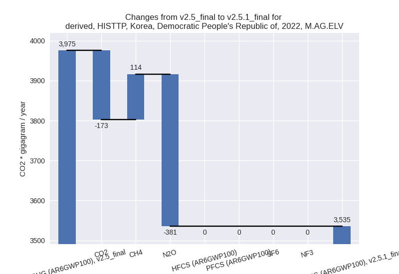

Changes in PRIMAP-hist v2.5.1_final compared to v2.5_final for Korea, Democratic People’s Republic of
2024-02-29
Johannes Gütschow
Change analysis for Korea, Democratic People’s Republic of for PRIMAP-hist v2.5.1_final compared to v2.5_final
Overview over emissions by sector and gas
The following figures show the aggregate national total emissions excluding LULUCF AR6GWP100 for the country reported priority scenario. The dotted linesshow the v2.5_final data.
The following figures show the aggregate national total emissions excluding LULUCF AR6GWP100 for the third party priority scenario. The dotted linesshow the v2.5_final data.
Overview over changes
In the country reported priority scenario we have the following changes for aggregate Kyoto GHG and national total emissions excluding LULUCF (M.0.EL):
- Emissions in 2022 have changed by 37.4%% (19558.47 Gg CO2 / year)
- Emissions in 1990-2022 have changed by 3.6%% (3545.17 Gg CO2 / year)
In the third party priority scenario we have the following changes for aggregate Kyoto GHG and national total emissions excluding LULUCF (M.0.EL):
- Emissions in 2022 have changed by 44.0%% (23442.75 Gg CO2 / year)
- Emissions in 1990-2022 have changed by 6.0%% (5241.16 Gg CO2 / year)
Most important changes per scenario and time frame
In the country reported priority scenario the following sector-gas combinations have the highest absolute impact on national total KyotoGHG (AR6GWP100) emissions in 2022 (top 5):
- 1: 1.A, CO2 with 27615.42 Gg CO2 / year (121.5%)
- 2: 2, CO2 with -6714.92 Gg CO2 / year (-65.4%)
- 3: 1.B.1, CH4 with -1169.28 Gg CO2 / year (-17.3%)
- 4: M.AG.ELV, N2O with -380.64 Gg CO2 / year (-24.8%)
- 5: 1.A, CH4 with 330.59 Gg CO2 / year (17.2%)
In the country reported priority scenario the following sector-gas combinations have the highest absolute impact on national total KyotoGHG (AR6GWP100) emissions in 1990-2022 (top 5):
- 1: 1.A, CO2 with 5129.74 Gg CO2 / year (8.0%)
- 2: 2, CO2 with -1532.46 Gg CO2 / year (-17.6%)
- 3: 1.B.1, CO2 with -100.59 Gg CO2 / year (-14.6%)
- 4: M.AG.ELV, N2O with 78.03 Gg CO2 / year (4.0%)
- 5: 1.B.1, CH4 with -57.99 Gg CO2 / year (-0.5%)
In the third party priority scenario the following sector-gas combinations have the highest absolute impact on national total KyotoGHG (AR6GWP100) emissions in 2022 (top 5):
- 1: 1.A, CO2 with 26878.22 Gg CO2 / year (121.5%)
- 2: 2, CO2 with -2225.95 Gg CO2 / year (-45.6%)
- 3: 1.B.1, CH4 with -926.53 Gg CO2 / year (-10.7%)
- 4: M.AG.ELV, N2O with -380.64 Gg CO2 / year (-24.8%)
- 5: 1.A, CH4 with 179.44 Gg CO2 / year (17.2%)
In the third party priority scenario the following sector-gas combinations have the highest absolute impact on national total KyotoGHG (AR6GWP100) emissions in 1990-2022 (top 5):
- 1: 1.A, CO2 with 4992.80 Gg CO2 / year (9.0%)
- 2: 1.B.1, CH4 with 726.81 Gg CO2 / year (6.5%)
- 3: 2, CO2 with -485.65 Gg CO2 / year (-12.7%)
- 4: 1.B.1, CO2 with -100.59 Gg CO2 / year (-14.6%)
- 5: M.AG.ELV, N2O with 78.03 Gg CO2 / year (4.0%)
Notes on data changes
Here we list notes explaining important emissions changes for the country. ’' means that the following text only applies to the TP time series, while means that it only applies to the CR scenario. Otherwise the note applies to both scenarios.
General note: reasons for changes are the same as in the country reported priority scenario.
- 1.A, KYOTOGHG (AR6GWP100): come from updated CDIAC data. While CDIAC 2020 shows a decline in emissions from 2016 to 2017, CDIAC 2023 shows a steep increase with relatively constant emissions afterwards.
- 2, KYOTOGHG (AR6GWP100): main change in sector 2 are much lower CO2 emissions in EDGAR 8.0 for 2.C.
- 1.A, CO2: 2022 and cumulative emissions changes come from the new CDIAC 2023 data which shows a strong increase in emissions in 2017 where CDIAC 2020 showed a slight decrease.
- 2.C, CO2: Post 2013 emissions are lower as EDGAR v7.0 showed a steep increase in 2014 while EDGAR 8.0 shows almost constant emissions post 2013.
- 1.B.1, CH4: Smaller changes in cumulative and 2022 emissions due to updated EDGAR emissions.
Changes by sector and gas
For each scenario and time frame the changes are displayed for all individual sectors and all individual gases. In the sector plot we use aggregate Kyoto GHGs in AR6GWP100. In the gas plot we usenational total emissions without LULUCF. ## country reported scenario
2022
1990-2022
third party scenario
2022
1990-2022
Detailed changes for the scenarios:
country reported scenario (HISTCR):
Most important changes per time frame
For 2022 the following sector-gas combinations have the highest absolute impact on national total KyotoGHG (AR6GWP100) emissions in 2022 (top 5):
- 1: 1.A, CO2 with 27615.42 Gg CO2 / year (121.5%)
- 2: 2, CO2 with -6714.92 Gg CO2 / year (-65.4%)
- 3: 1.B.1, CH4 with -1169.28 Gg CO2 / year (-17.3%)
- 4: M.AG.ELV, N2O with -380.64 Gg CO2 / year (-24.8%)
- 5: 1.A, CH4 with 330.59 Gg CO2 / year (17.2%)
For 1990-2022 the following sector-gas combinations have the highest absolute impact on national total KyotoGHG (AR6GWP100) emissions in 1990-2022 (top 5):
- 1: 1.A, CO2 with 5129.74 Gg CO2 / year (8.0%)
- 2: 2, CO2 with -1532.46 Gg CO2 / year (-17.6%)
- 3: 1.B.1, CO2 with -100.59 Gg CO2 / year (-14.6%)
- 4: M.AG.ELV, N2O with 78.03 Gg CO2 / year (4.0%)
- 5: 1.B.1, CH4 with -57.99 Gg CO2 / year (-0.5%)
Changes in the main sectors for aggregate KyotoGHG (AR6GWP100) are
- 1: Total sectoral emissions in 2022 are 58603.41 Gg
CO2 / year which is 81.5% of M.0.EL emissions. 2022 Emissions have
changed by 84.0% (26759.07 Gg CO2 /
year). 1990-2022 Emissions have changed by 6.3% (4968.26 Gg CO2 / year). For 2022 the
changes per gas
are:
For 1990-2022 the changes per gas are:
The changes come from the following subsectors:- 1.A: Total sectoral emissions in 2022 are 52819.09
Gg CO2 / year which is 90.1% of category 1 emissions. 2022 Emissions
have changed by 112.6% (27979.13 Gg
CO2 / year). 1990-2022 Emissions have changed by 7.6% (5126.54 Gg CO2 / year). For 2022 the
changes per gas
are:
For 1990-2022 the changes per gas are:
There is no subsector information available in PRIMAP-hist. - 1.B.1: Total sectoral emissions in 2022 are 5776.30
Gg CO2 / year which is 9.9% of category 1 emissions. 2022 Emissions have
changed by -17.5% (-1223.89 Gg CO2 /
year). 1990-2022 Emissions have changed by -1.4% (-158.58 Gg CO2 / year). For 2022
the changes per gas
are:
There is no subsector information available in PRIMAP-hist. - 1.B.2: Total sectoral emissions in 2022 are 8.01 Gg
CO2 / year which is 0.0% of category 1 emissions. 2022 Emissions have
changed by 91.5% (3.83 Gg CO2 /
year). 1990-2022 Emissions have changed by 5.7% (0.31 Gg CO2 / year). For 2022 the
changes per gas
are:
For 1990-2022 the changes per gas are:
There is no subsector information available in PRIMAP-hist.
- 1.A: Total sectoral emissions in 2022 are 52819.09
Gg CO2 / year which is 90.1% of category 1 emissions. 2022 Emissions
have changed by 112.6% (27979.13 Gg
CO2 / year). 1990-2022 Emissions have changed by 7.6% (5126.54 Gg CO2 / year). For 2022 the
changes per gas
are:
- 2: Total sectoral emissions in 2022 are 6840.65 Gg
CO2 / year which is 9.5% of M.0.EL emissions. 2022 Emissions have
changed by -49.7% (-6746.97 Gg CO2 /
year). 1990-2022 Emissions have changed by -14.8% (-1539.26 Gg CO2 / year). For 2022
the changes per gas
are:
For 1990-2022 the changes per gas are: - M.AG: Total sectoral emissions in 2022 are 4746.27
Gg CO2 / year which is 6.6% of M.0.EL emissions. 2022 Emissions have
changed by -9.3% (-486.16 Gg CO2 /
year). 1990-2022 Emissions have changed by 1.9% (115.19 Gg CO2 / year). For 2022 the
changes per gas
are:

The changes come from the following subsectors:- 3.A: Total sectoral emissions in 2022 are 1816.26 Gg CO2 / year which is 38.3% of category M.AG emissions. 2022 Emissions have changed by -0.9% (-17.06 Gg CO2 / year). 1990-2022 Emissions have changed by -0.0% (-0.80 Gg CO2 / year).
- M.AG.ELV: Total sectoral emissions in 2022 are
2930.00 Gg CO2 / year which is 61.7% of category M.AG emissions. 2022
Emissions have changed by -13.8%
(-469.11 Gg CO2 / year). 1990-2022 Emissions have changed by 2.7% (115.98 Gg CO2 / year). For 2022 the
changes per gas
are:
For 1990-2022 the changes per gas are:
There is no subsector information available in PRIMAP-hist.
- 4: Total sectoral emissions in 2022 are 1651.21 Gg CO2 / year which is 2.3% of M.0.EL emissions. 2022 Emissions have changed by 0.1% (1.12 Gg CO2 / year). 1990-2022 Emissions have changed by 0.0% (0.03 Gg CO2 / year).
- 5: Total sectoral emissions in 2022 are 56.32 Gg
CO2 / year which is 0.1% of M.0.EL emissions. 2022 Emissions have
changed by 126.1% (31.41 Gg CO2 /
year). 1990-2022 Emissions have changed by 0.4% (0.95 Gg CO2 / year). For 2022 the
changes per gas
are:
third party scenario (HISTTP):
Most important changes per time frame
For 2022 the following sector-gas combinations have the highest absolute impact on national total KyotoGHG (AR6GWP100) emissions in 2022 (top 5):
- 1: 1.A, CO2 with 26878.22 Gg CO2 / year (121.5%)
- 2: 2, CO2 with -2225.95 Gg CO2 / year (-45.6%)
- 3: 1.B.1, CH4 with -926.53 Gg CO2 / year (-10.7%)
- 4: M.AG.ELV, N2O with -380.64 Gg CO2 / year (-24.8%)
- 5: 1.A, CH4 with 179.44 Gg CO2 / year (17.2%)
For 1990-2022 the following sector-gas combinations have the highest absolute impact on national total KyotoGHG (AR6GWP100) emissions in 1990-2022 (top 5):
- 1: 1.A, CO2 with 4992.80 Gg CO2 / year (9.0%)
- 2: 1.B.1, CH4 with 726.81 Gg CO2 / year (6.5%)
- 3: 2, CO2 with -485.65 Gg CO2 / year (-12.7%)
- 4: 1.B.1, CO2 with -100.59 Gg CO2 / year (-14.6%)
- 5: M.AG.ELV, N2O with 78.03 Gg CO2 / year (4.0%)
Changes in the main sectors for aggregate KyotoGHG (AR6GWP100) are
- 1: Total sectoral emissions in 2022 are 58428.82 Gg
CO2 / year which is 76.1% of M.0.EL emissions. 2022 Emissions have
changed by 80.8% (26120.78 Gg CO2 /
year). 1990-2022 Emissions have changed by 8.2% (5617.36 Gg CO2 / year). For 2022 the
changes per gas
are:

For 1990-2022 the changes per gas are:
The changes come from the following subsectors:- 1.A: Total sectoral emissions in 2022 are 50492.11
Gg CO2 / year which is 86.4% of category 1 emissions. 2022 Emissions
have changed by 115.8% (27098.09 Gg
CO2 / year). 1990-2022 Emissions have changed by 8.8% (4990.84 Gg CO2 / year). For 2022 the
changes per gas
are:
For 1990-2022 the changes per gas are:
There is no subsector information available in PRIMAP-hist. - 1.B.1: Total sectoral emissions in 2022 are 7928.69
Gg CO2 / year which is 13.6% of category 1 emissions. 2022 Emissions
have changed by -11.0% (-981.13 Gg
CO2 / year). 1990-2022 Emissions have changed by 5.3% (626.21 Gg CO2 / year). For 2022 the
changes per gas
are:
For 1990-2022 the changes per gas are:
There is no subsector information available in PRIMAP-hist. - 1.B.2: Total sectoral emissions in 2022 are 8.01 Gg
CO2 / year which is 0.0% of category 1 emissions. 2022 Emissions have
changed by 91.5% (3.83 Gg CO2 /
year). 1990-2022 Emissions have changed by 5.7% (0.31 Gg CO2 / year). For 2022 the
changes per gas
are:
For 1990-2022 the changes per gas are:
There is no subsector information available in PRIMAP-hist.
- 1.A: Total sectoral emissions in 2022 are 50492.11
Gg CO2 / year which is 86.4% of category 1 emissions. 2022 Emissions
have changed by 115.8% (27098.09 Gg
CO2 / year). 1990-2022 Emissions have changed by 8.8% (4990.84 Gg CO2 / year). For 2022 the
changes per gas
are:
- 2: Total sectoral emissions in 2022 are 5934.14 Gg
CO2 / year which is 7.7% of M.0.EL emissions. 2022 Emissions have
changed by -27.6% (-2257.99 Gg CO2 /
year). 1990-2022 Emissions have changed by -8.9% (-492.45 Gg CO2 / year). For 2022
the changes per gas
are:
For 1990-2022 the changes per gas are: - M.AG: Total sectoral emissions in 2022 are 5317.99
Gg CO2 / year which is 6.9% of M.0.EL emissions. 2022 Emissions have
changed by -7.9% (-456.82 Gg CO2 /
year). 1990-2022 Emissions have changed by 1.7% (115.14 Gg CO2 / year). For 2022 the
changes per gas
are:
The changes come from the following subsectors:- 3.A: Total sectoral emissions in 2022 are 1782.50 Gg CO2 / year which is 33.5% of category M.AG emissions. 2022 Emissions have changed by -0.9% (-16.81 Gg CO2 / year). 1990-2022 Emissions have changed by -0.0% (-0.78 Gg CO2 / year).
- M.AG.ELV: Total sectoral emissions in 2022 are
3535.49 Gg CO2 / year which is 66.5% of category M.AG emissions. 2022
Emissions have changed by -11.1%
(-440.01 Gg CO2 / year). 1990-2022 Emissions have changed by 2.3% (115.92 Gg CO2 / year). For 2022 the
changes per gas
are:

For 1990-2022 the changes per gas are:
There is no subsector information available in PRIMAP-hist.
- 4: Total sectoral emissions in 2022 are 7025.17 Gg CO2 / year which is 9.2% of M.0.EL emissions. 2022 Emissions have changed by 0.1% (5.37 Gg CO2 / year). 1990-2022 Emissions have changed by 0.0% (0.16 Gg CO2 / year).
- 5: Total sectoral emissions in 2022 are 56.32 Gg
CO2 / year which is 0.1% of M.0.EL emissions. 2022 Emissions have
changed by 126.1% (31.41 Gg CO2 /
year). 1990-2022 Emissions have changed by 0.4% (0.95 Gg CO2 / year). For 2022 the
changes per gas
are: